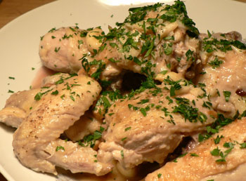

Chicken with lots of garlic
I’ve been getting Gourmet for nearly a year, but I never tried to make many recipes in it until recently. I guess I need one really good recipe to push me over the edge, and that hasn’t happened yet with this magazine. Just a few duds.
The back page of last month’s issue had a recipe called Chicken with lots of garlic (I love how all Gourmet recipes are available online for free). I’ve had a hankering for wintery foods, and this seemed to fit the bill.
This dish was mostly a success, and the garlicky flavor was good, but I would add a step if you try it: After you brown the chicken (mine could clearly be browner), clean all the chicken fat out of the pan, add fresh oil, and then proceed with the recipe. As it was, the finished dish was a bit greasy for late-August. Also, you’ll need more than the 20 to 25 minutes they ask for; I needed nearly forty to finish the cooking. And you’ll definitely want some crusty bread for sopping up the sauce.
I served the chicken with sautéed swiss chard leaves and portobello mushrooms, which proved to be a distraction from the chicken. I blanched the chard, dried it, and then put it in a pan with olive oil and the mushrooms for nearly an hour over extremely low heat, seasoning here and there. The end result was pleasingly dry, sweet, and intense.
Comments
I also love how all Gourmet’s recipes are available online, and I love that people rate them which I think helps in steering clear of the duds, but not always.
The chicken looks good and your swiss chard and mushrooms sounds wonderful.
I’m glad you tried this; it was one we both thought looked good when we were reading the magazine together.
I didn’t know Gourmet’s recipes were available for free online, but that’s terrific. That’s something that’s always frosted me about Cook’s Illustrated, that you have to pay to see the recipe archive, even if you subscribe to the magazine, you have to pay a separate subscription fee to their online magazine. I think that’s bullshit. Although of course they don’t have the advertising revenue that Gourmet does, but at least you’d think one subscription would cover both.
That looks wonderful. I might have to try it once the weather cools off a bit.
And yes, I love epicurious.com. It has given me many an excellent recipe over the years.
Add a comment